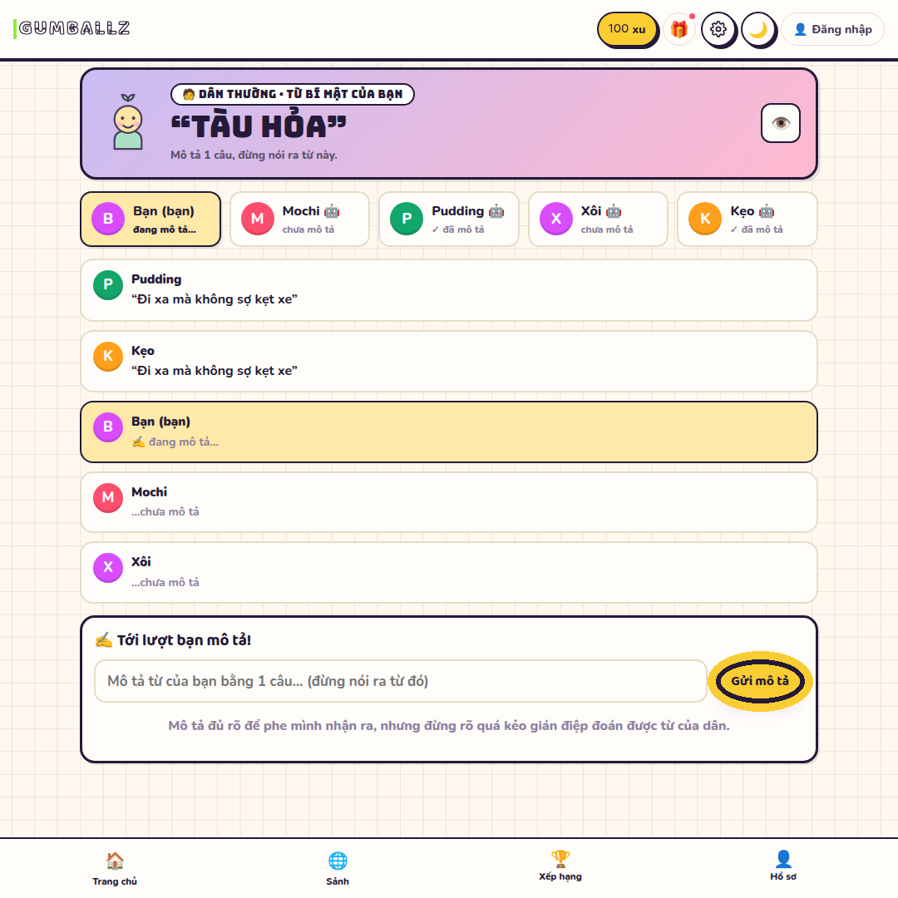

Ai là Gián Điệp là trò đoán từ cho 4–12 người: mỗi vòng mọi người nhận 1 từ bí mật — đa số (dân thường) cùng nhận 1 từ, còn 1–2 người (gián điệp) nhận 1 từ khác nhưng rất giống. Nhiệm vụ của bạn: mô tả từ của mình sao cho phe mình nhận ra, nhưng đừng để lộ cho gián điệp biết — rồi bỏ phiếu tìm ra gián điệp!
1. Nhận từ bí mật
- Mỗi người được chia 1 từ bí mật, chỉ mình bạn thấy (đừng để người bên cạnh nhìn trộm!).
- Đa số nhận cùng 1 từ — ví dụ Cà phê. Gián điệp nhận 1 từ tương tự — ví dụ Trà sữa.
- Chơi chuyền tay trên 1 máy: mỗi người lần lượt bấm Xem từ của tôi, xem xong bấm Đã xem, che lại rồi đưa máy cho người tiếp theo.
2. Mô tả bằng 1 câu
- Lần lượt từng người mô tả từ của mình bằng đúng 1 câu — tới lượt ai thì người đó gõ câu mô tả rồi bấm Gửi mô tả.
- Không được nói ra từ của mình (game chặn luôn nếu câu mô tả chứa từ đó).
- Mẹo: mô tả đủ rõ để dân thường nhận ra bạn cùng phe, nhưng đừng rõ quá kẻo gián điệp đoán được từ của dân.
- Chủ phòng có thể bật đồng hồ mô tả (30/45/60 giây): hết giờ mà chưa gửi thì game tự gửi 1 câu mô tả chung chung giúp bạn.
3. Bỏ phiếu tìm gián điệp
- Sau vòng mô tả, mọi người cùng bỏ phiếu: bấm vào người bạn nghi là gián điệp nhất.
- Người bị nhiều phiếu nhất sẽ bị loại và lộ từ của mình cho cả bàn xem — nếu đó là gián điệp thì dân mừng, nếu đó là dân thường thì gián điệp mừng thầm!
- Hòa phiếu thì không ai bị loại, chơi vòng mới với cặp từ mới.
4. Thắng thua
- Dân thường thắng khi loại hết gián điệp.
- Gián điệp thắng khi số gián điệp bằng hoặc nhiều hơn số dân còn lại.
- Hết 1 vòng mà chưa phân thắng bại thì chơi vòng mới: cặp từ mới, vai trò chia lại từ đầu.
- Khi ván kết thúc, game lật hết vai trò và từ của mọi người cho cả bàn xem.
5. Mẹo chơi
- Làm dân thường: nghe kĩ mô tả của người khác — ai mô tả lệch hẳn so với đa số thì đáng nghi.
- Làm gián điệp: mô tả chung chung, bám theo ý người khác, đừng cố tỏ ra hiểu quá rõ.
- Đừng mô tả quá chi tiết: gián điệp nghe xong là đoán được từ của dân ngay.
6. Chế độ chơi
- 🌐 Online: tạo phòng, gửi mã 5 ký tự cho bạn vào chơi cùng (4–12 người).
- 🤖 Chơi với máy: máy tự mô tả và bỏ phiếu theo cảm nhận về từ của nó.
- 👥 Chuyền tay: nhiều người chơi chung 1 máy — mỗi người xem từ rồi đưa máy cho người tiếp theo.